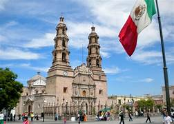
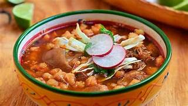
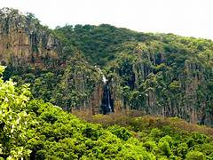
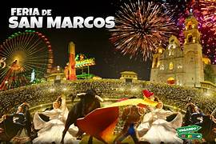

La capital del estado, también llamada Aguascalientes, es conocida por su desarrollo industrial, su arquitectura colonial y su rica historia. La ciudad es famosa por su Feria Nacional de San Marcos, una de las ferias más grandes y antiguas de México, que atrae a visitantes de todo el país con eventos culturales, artísticos, gastronómicos y ganaderos.

La gastronomía de Aguascalientes es una delicia para los amantes de la comida mexicana. Platillos como los tamales de anís, el pozole, el asado de boda, los tacos de barbacoa y los tradicionales dulces de leche son algunos de los manjares que se pueden disfrutar en la región.

Aunque es un estado pequeño, Aguascalientes ofrece una variedad de paisajes naturales para explorar. El Parque Nacional Sierra Fría es un destino popular para practicar senderismo y disfrutar de la naturaleza. También hay aguas termales en la región, como las de Ojocaliente, que son conocidas por sus propiedades terapéuticas y relajantes.

El estado de Aguascalientes cuenta con una rica tradición cultural. Además de la Feria Nacional de San Marcos, la ciudad de Aguascalientes alberga el Museo José Guadalupe Posada, dedicado al famoso grabador y caricaturista mexicano. También hay una escena artística vibrante, con galerías de arte, teatros y festivales culturales a lo largo del año.

Notas relevantes:El nombre "Aguascalientes" proviene de las aguas termales que los primeros habitantes de la
región encontraron en el lugar. Los manantiales de aguas calientes eran conocidos por sus propiedades
terapéuticas y dieron origen al nombre del estado.
Conocido como la "Tierra de la Feria", Aguascalientes
alberga la famosa Feria Nacional de San Marcos, una de las festividades más importantes de México, que atrae a
miles de visitantes cada año.
Cuna de la Catrina: José Guadalupe Posada, el grabador y caricaturista
mexicano, originario de Aguascalientes, fue el creador de la icónica imagen de La Catrina, figura emblemática
del Día de Muertos en México.